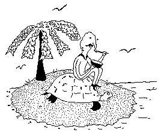

The turtle lives 'twixt plated decks
Which practically conceal its sex
I think it clever of the turtle
In such a fix to be so fertile
--Ogden Nash (1902-71), "The Turtle"
The vitamin hunger of sailors [on the early voyages of exploration], which came from nowhere and made men's gums grow over their teeth, and could send a corpse a day sliding over the rail, practically disappeared in the Caribbean after the disovery of Chelonia, the green turtle. No other edible creature could be carried away and kept so long alive. Only the turtle could take the place of spoiled kegs of beef....
--Archie Carr, So Excellent a Fishe, (1967)
Famous Turtles in pop culture: Dr. Seuss' Yertle the Tertle, Daisuke Gôri, The Tortoise and the Hare (to include Cecil Turtle and Bugs Bunny in the 1940s, and Michelangelo, Donatello, Leonardo, and Raphael of Teenaged Ninja Turtle fame.
§ Home § Search § FoodTales § Any comments?
Turtles and Terrapins
(Chelonia)
 At last, clarification for the much vexed question, "what do you MEAN it's illegal to eat turtle or turtle soup?!"
Okay, I mean it's mostly illegal (and certainly illegal in the U.S.) to eat the protected species of sea turtles that are traditionally used to make the elegant turtle soup described in the SoupTale about Lady Curzon and seen or mentioned in movies as diverse as Babette's Feast, Age of Innocence, and Guess Who's Coming To Dinner?. Sea turtle soup was a standard in English cookery from 1751, when its recipe appeared in Hannah Glass's The Art of Cookery Made Plain and Easy. The precious ingredient was not turtle meat, however--which was served as a proper turtle steak; rather, it was the 6 to 8 pounds of gelatinous material from under the top and bottom shells. Which is why the old recipes for mock turtle soup called for calves head--for that same gelatinous quality.
Turtle meat was proscribed in Leviticus 11:29--"These also shall be unclean unto you...the weasel, and the mouse, and the tortoise after his kind"--but Catholic monks, later, were to welcome this permissible "meat" to their Lenten tables.
The huge marine green sea turtle was around when dinasaurs were--but stayed relatively immune to predators until Man got so clever with his tools...and until Man and land animals developed such an appetite for turtle eggs, which are always laid on land beaches and so can be dug up and eaten, thus destroying future generations. The prehistoric Archelon (living 25 million years ago) grew 12 feel long. Even today, sea turtles cannot withdraw into their shells for protection--they depend on their size, their speed, and their unappetizing shells to survive.
Today there are 7 species left, the green turtle, the flatback, the hawksbill, the loggerhead, the Atlantic ridley, and the Pacific ridley (all in one common family) and the leatherback. Of these, 4 have been most exploited as food:
- Chelonia mydas, the green turtle--its flippers (calipees) most commonly used for turtle soup. It can grow as heavy as 250 pounds--and yet it can swim in short bursts at speeds up to 20 miles per hour.
- Eretmochelys imbricata, the hawksbill turtle--who uses its hawkshaped bill to hook crab and prawns and whose eggs are much prized as a food.
- Caretta caretta, the loggerhead turtle--famously used in a Maltese turtle stew.
- Dermochelys coriacea, the leatherback turtle--whose meat doesn't taste that great, but whose eggs are regarded as an aphrodisiac.
Generally speaking, turtles are the only reptile with a shell--and they number a total of about 250 species, living on land, in the sea, and in fresh water. (The name "terrapin" is given to some of the freshwater and salt marsh varieties.) Besides sea turtles, there are 6 other groups...and, yes, some of these not only CAN be eaten, but are GOOD to eat:
- Mud and musk turtles (freshwater, Western Hemisphere only)--who release a musk so pungent when they are disturbed that they're called "stinkpots"
- Pond and marsh turtles (found in Asia, Europe, North Africa, and the Americas--in freshwater, seawater, and even on the land). These include the box turtle, the chicken turtle, the diamond back terrapin--and, yes, they can be very good to eat. The diamond back from the Chesapeake Bay area is reputed to be the best--and attempts are being made to farm this terrapin as a replenishable food source.
- Side-necked turtles (from equatorial areas in Australia, Africa, and South America)
- Snapping turtles (freshwater, Western Hemisphere only)--with some varieties ferocious and big enough to snap through a broom handle. These are also edible--and much prized throughout the Mississippi basin.
- Soft-shelled turtles (freshwater, in Africa, America, and Asia)
- Tortoises (land turtles, in Africa, Asia, Europe, the Americas, and some islands--including the giant Galapagos and Aldabran tortoises, which can weight up to 600 pounds)